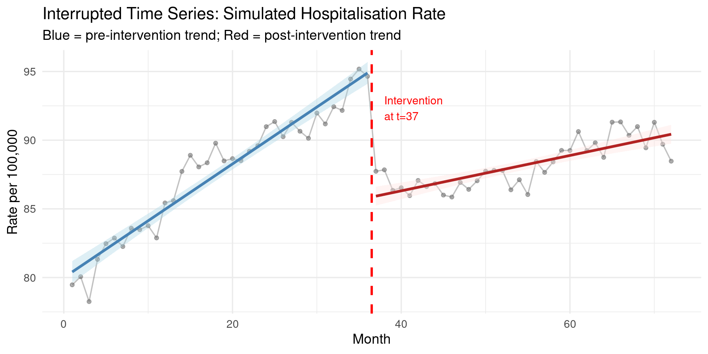
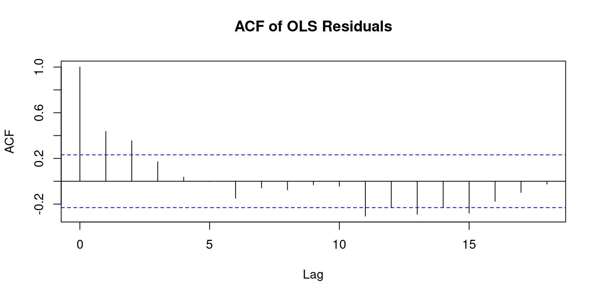
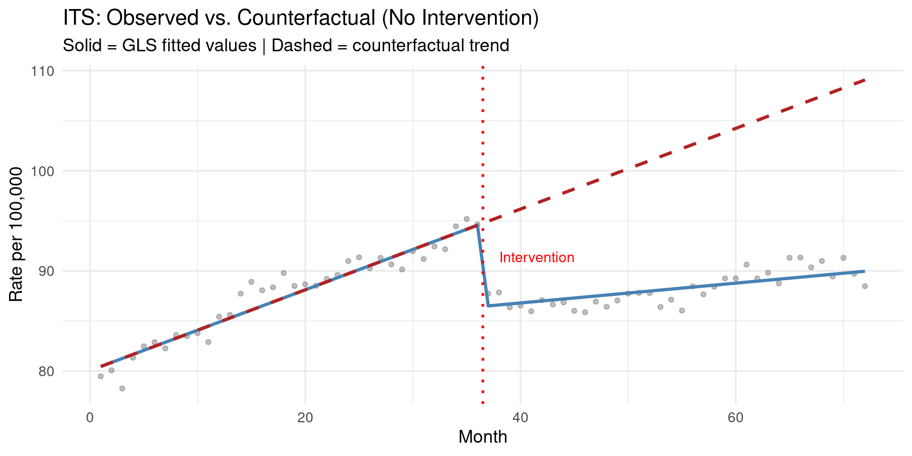
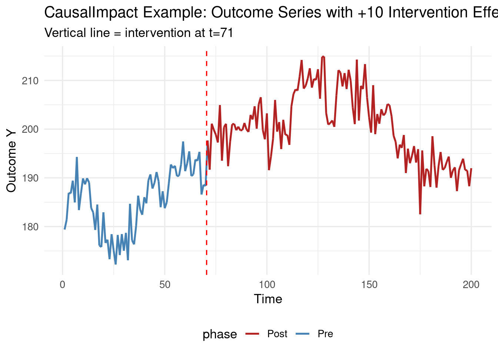
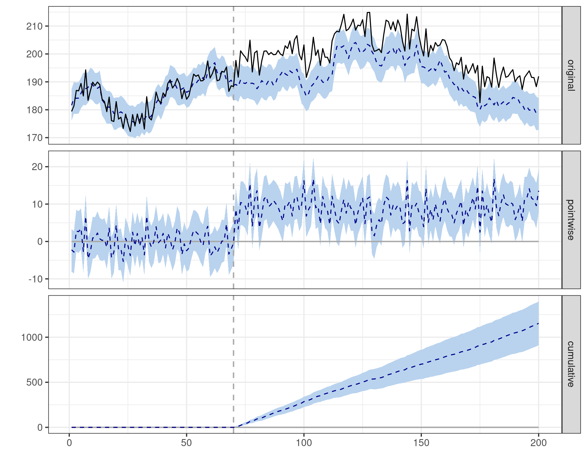
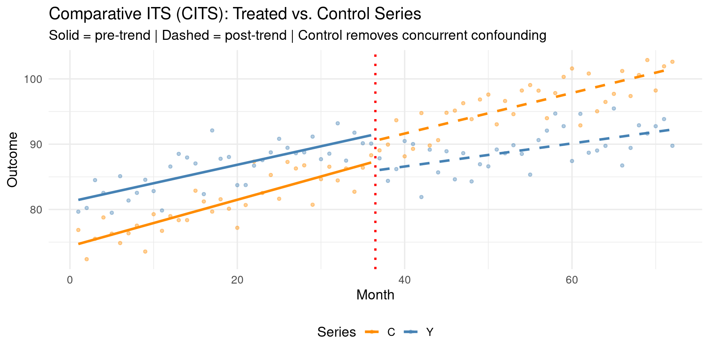

Code
packages <- c(
"tidyverse",
"CausalImpact",
"nlme",
"sandwich",
"lmtest",
"forecast",
"ggplot2",
"patchwork"
)
When a well-defined intervention — a new law, a clinical protocol change, a public health campaign, an environmental regulation — is implemented at a known calendar date, the most natural causal question is: did the time series change in a way it would not have changed otherwise? Interrupted Time Series (ITS) analysis answers this question by comparing the observed post-intervention trajectory against a counterfactual extrapolated from the pre-intervention period. It is one of the most widely used quasi-experimental designs in public health, health policy, environmental regulation, and program evaluation precisely because it requires no control group — only a long pre-intervention series and a credible assumption that the pre-trend would have continued.
This chapter covers three interconnected designs. Segmented regression ITS fits separate linear trends before and after the breakpoint, estimating both a level change and a slope change at the intervention. Bayesian Structural Time Series (BSTS) using the CausalImpact package extends this by fitting a full state-space model to the pre-intervention period, extrapolating a probabilistic counterfactual, and computing the posterior distribution of the causal effect. Comparative ITS (CITS) strengthens validity by adding a parallel control series, removing concurrent secular trends that could otherwise be mistaken for intervention effects.
The canonical ITS regression model for a single aggregate unit observed at times \(t = 1, \ldots, T\), with intervention at \(T^*\):
\[ Y_t = \beta_0 + \beta_1 t + \beta_2 D_t + \beta_3 (t - T^*) D_t + \varepsilon_t \]
where:
Interpretation of parameters:
| Parameter | Meaning | Causal Question |
|---|---|---|
| \(\beta_2\) | Immediate level change at \(T^*\) | Did the series jump at the intervention? |
| \(\beta_3\) | Change in slope post-intervention | Did the trend accelerate or decelerate? |
| \(\beta_2 + k\beta_3\) | Cumulative effect at \(k\) periods post | What is the sustained effect at time \(k\)? |
Critical assumption — Trend Continuity: The pre-intervention trend would have continued unchanged in the absence of the intervention. Violations occur if: (a) a concurrent event coincides with \(T^*\); (b) regression to the mean affects the post-period; (c) secular trends affect treated and control units differentially.
Autocorrelation correction: ITS residuals are almost always autocorrelated. OLS standard errors are invalid. Use:
sandwich package)nlme::gls with corAR1)forecast::Arima with xreg)The CausalImpact package (Brodersen et al., 2015) models the pre-intervention time series as a state-space model:
\[ y_t = \mathbf{Z}_t^\top \boldsymbol{\alpha}_t + \varepsilon_t, \quad \varepsilon_t \sim \mathcal{N}(0, \sigma_\varepsilon^2) \]
\[ \boldsymbol{\alpha}_{t+1} = \mathbf{T}_t \boldsymbol{\alpha}_t + \mathbf{R}_t \boldsymbol{\eta}_t, \quad \boldsymbol{\eta}_t \sim \mathcal{N}(\mathbf{0}, \mathbf{Q}_t) \]
The state vector \(\boldsymbol{\alpha}_t\) captures a local linear trend (level + slope), seasonal components, and optionally covariate regression components. The model is fitted to the pre-intervention period only; the posterior predictive distribution is then extrapolated forward as the counterfactual.
The causal effect at time \(t\) (post-intervention) is:
\[ \delta_t = y_t - \hat{y}_t^{\text{counterfactual}} \]
The package returns point-wise effects, cumulative effects, and posterior credible intervals — all as probability distributions, not single-point estimates.
Advantages over segmented regression:
| Segmented Regression | BSTS / CausalImpact |
|---|---|
| Linear counterfactual only | Flexible non-linear state-space counterfactual |
| Point estimate with SE | Full posterior distribution of effect |
| Manual autocorrelation correction | Handles autocorrelation automatically |
| No covariate incorporation | Covariate regression built in |
| No uncertainty about counterfactual model | Model uncertainty propagated to effect estimate |
A CITS adds a control series \(C_t\) to the ITS model. The control series experiences the same secular trends and concurrent events as the treated series, but is not directly exposed to the intervention. The CITS estimator is a difference-in-discontinuities:
\[ \hat{\delta}^{\text{CITS}} = \underbrace{(\text{change in } Y \text{ at } T^*)}_{\text{treated discontinuity}} - \underbrace{(\text{change in } C \text{ at } T^*)}_{\text{control discontinuity}} \]
This removes the bias from any concurrent event that affects both series equally at \(T^*\).
packages <- c(
"tidyverse",
"CausalImpact",
"nlme",
"sandwich",
"lmtest",
"forecast",
"ggplot2",
"patchwork"
)#| warning: false
#| error: false
new_packages <- packages[!(packages %in% installed.packages()[,"Package"])]
if(length(new_packages)) install.packages(new_packages)invisible(lapply(packages, function(pkg) {
suppressPackageStartupMessages(library(pkg, character.only = TRUE))
}))cat("Successfully loaded packages:\n")Successfully loaded packages: [1] "package:patchwork" "package:forecast" "package:lmtest"
[4] "package:sandwich" "package:nlme" "package:CausalImpact"
[7] "package:bsts" "package:xts" "package:zoo"
[10] "package:BoomSpikeSlab" "package:Boom" "package:lubridate"
[13] "package:forcats" "package:stringr" "package:dplyr"
[16] "package:purrr" "package:readr" "package:tidyr"
[19] "package:tibble" "package:ggplot2" "package:tidyverse"
[22] "package:stats" "package:graphics" "package:grDevices"
[25] "package:utils" "package:datasets" "package:methods"
[28] "package:base" We simulate a monthly health outcome time series (e.g., hospitalisation rate per 100,000) with a known level change and slope change at an intervention implemented at month 37.
# Parameters
T_total <- 72 # 72 months (6 years)
T_star <- 37 # Intervention at month 37
# True effects
level_change <- -8 # Immediate drop of 8 units
slope_change <- -0.3 # Additional downward slope post-intervention
# Generate the series
its_df <- tibble(
t = 1:T_total,
D = as.integer(t >= T_star), # Post-intervention indicator
t_post = pmax(t - T_star, 0) * D, # Time since intervention
# True data-generating process
Y_true = 80 + 0.4 * t # Pre-trend
+ level_change * D
+ slope_change * t_post,
# Observed with AR(1) autocorrelated noise
Y = Y_true + arima.sim(n = T_total,
model = list(ar = 0.55, sd = 3))
)
cat("ITS Dataset Summary:\n")ITS Dataset Summary: Observations: 72 (pre: 36, post: 36) True level change: -8.0
True slope change: -0.30ggplot(its_df, aes(x = t, y = Y)) +
geom_point(alpha = 0.5, size = 1.5, color = "gray40") +
geom_line(alpha = 0.4, color = "gray40") +
geom_vline(xintercept = T_star - 0.5, linetype = "dashed",
color = "red", linewidth = 1.1) +
# Pre-intervention LOESS
geom_smooth(data = filter(its_df, D == 0),
method = "lm", se = TRUE,
color = "steelblue", linewidth = 1.3, fill = "lightblue") +
# Post-intervention LOESS
geom_smooth(data = filter(its_df, D == 1),
method = "lm", se = TRUE,
color = "firebrick", linewidth = 1.3, fill = "mistyrose") +
annotate("text", x = T_star + 1, y = max(its_df$Y) * 0.97,
label = "Intervention\nat t=37", hjust = 0, color = "red", size = 4) +
labs(
title = "Interrupted Time Series: Simulated Hospitalisation Rate",
subtitle = "Blue = pre-intervention trend; Red = post-intervention trend",
x = "Month", y = "Rate per 100,000"
) +
theme_minimal(base_size = 14)
Call:
lm(formula = Y ~ t + D + t_post, data = its_df)
Residuals:
Min 1Q Median 3Q Max
-2.98696 -0.63942 0.07468 0.50727 2.69849
Coefficients:
Estimate Std. Error t value Pr(>|t|)
(Intercept) 79.99212 0.38125 209.81 <0.0000000000000002 ***
t 0.41396 0.01797 23.04 <0.0000000000000002 ***
D -9.38362 0.52828 -17.76 <0.0000000000000002 ***
t_post -0.28519 0.02541 -11.22 <0.0000000000000002 ***
---
Signif. codes: 0 '***' 0.001 '**' 0.01 '*' 0.05 '.' 0.1 ' ' 1
Residual standard error: 1.12 on 68 degrees of freedom
Multiple R-squared: 0.896, Adjusted R-squared: 0.8915
F-statistic: 195.4 on 3 and 68 DF, p-value: < 0.00000000000000022Durbin-Watson statistic: 1.0737 (p = 0.0000)→ Significant autocorrelation — correct standard errors!
# Corrected inference with Newey-West HAC SEs
its_nw <- coeftest(its_ols, vcov = NeweyWest(its_ols, lag = 4))
cat("=== ITS Estimates with Newey-West SEs ===\n")=== ITS Estimates with Newey-West SEs ===print(its_nw)
t test of coefficients:
Estimate Std. Error t value Pr(>|t|)
(Intercept) 79.992115 0.565126 141.5474 < 0.00000000000000022 ***
t 0.413962 0.024001 17.2477 < 0.00000000000000022 ***
D -9.383617 0.771687 -12.1599 < 0.00000000000000022 ***
t_post -0.285188 0.036722 -7.7661 0.00000000005827 ***
---
Signif. codes: 0 '***' 0.001 '**' 0.01 '*' 0.05 '.' 0.1 ' ' 1
Level change (beta_2): -9.384 (SE: 0.772, p = 0.0000)Slope change (beta_3): -0.285 (SE: 0.037, p = 0.0000)
True level change: -8.0 | True slope change: -0.30# GLS with AR(1) correlation structure — more efficient than NW
its_gls <- gls(Y ~ t + D + t_post,
data = its_df,
correlation = corAR1(form = ~ 1))
summary(its_gls)Generalized least squares fit by REML
Model: Y ~ t + D + t_post
Data: its_df
AIC BIC logLik
222.9713 236.2883 -105.4856
Correlation Structure: AR(1)
Formula: ~1
Parameter estimate(s):
Phi
0.5873312
Coefficients:
Value Std.Error t-value p-value
(Intercept) 80.04065 0.7442799 107.54105 0
t 0.40330 0.0335796 12.01025 0
D -8.46434 0.8548564 -9.90147 0
t_post -0.30436 0.0515514 -5.90397 0
Correlation:
(Intr) t D
t -0.857
D 0.287 -0.534
t_post 0.618 -0.768 0.030
Standardized residuals:
Min Q1 Med Q3 Max
-2.42928373 -0.49893938 -0.04974878 0.57206093 2.27268684
Residual standard error: 1.236373
Degrees of freedom: 72 total; 68 residual# Generate counterfactual (no intervention: D=0, t_post=0 for all periods)
cf_df <- its_df %>%
mutate(
Y_fitted = fitted(its_gls),
Y_counterfactual = predict(its_gls,
newdata = its_df %>% mutate(D = 0, t_post = 0))
)
ggplot(cf_df, aes(x = t)) +
geom_point(aes(y = Y), alpha = 0.4, size = 1.4, color = "gray40") +
geom_line(aes(y = Y_fitted), color = "steelblue", linewidth = 1.2, linetype = "solid") +
geom_line(aes(y = Y_counterfactual), color = "firebrick", linewidth = 1.2, linetype = "dashed") +
geom_vline(xintercept = T_star - 0.5, linetype = "dotted", color = "red", linewidth = 1) +
annotate("text", x = T_star + 1, y = max(cf_df$Y) * 0.96,
label = "Intervention", hjust = 0, color = "red", size = 4) +
labs(
title = "ITS: Observed vs. Counterfactual (No Intervention)",
subtitle = "Solid = GLS fitted values | Dashed = counterfactual trend",
x = "Month", y = "Rate per 100,000"
) +
theme_minimal(base_size = 14)
# Prepare time series object for CausalImpact
# CausalImpact requires a zoo object, data frame, or numeric vector — not ts()
y_ts <- zoo(its_df$Y)
# Define pre- and post-intervention periods
pre_period <- c(1, T_star - 1)
post_period <- c(T_star, T_total)
# Run CausalImpact
ci_result <- CausalImpact(
data = y_ts,
pre.period = pre_period,
post.period = post_period,
model.args = list(
niter = 2000, # MCMC iterations
standardize.data = TRUE,
prior.level.sd = 0.01,
nseasons = 1
)
)summary(ci_result)Posterior inference {CausalImpact}
Average Cumulative
Actual 88 3174
Prediction (s.d.) 88 (1.1) 3152 (39.7)
95% CI [85, 90] [3075, 3230]
Absolute effect (s.d.) 0.63 (1.1) 22.83 (39.7)
95% CI [-1.6, 2.8] [-55.9, 99.5]
Relative effect (s.d.) 0.72% (1.3%) 0.72% (1.3%)
95% CI [-1.7%, 3.2%] [-1.7%, 3.2%]
Posterior tail-area probability p: 0.28526
Posterior probability of an effect: 71%
For more details, type: summary(impact, "report")# Extract summary statistics
ci_summary <- summary(ci_result)Posterior inference {CausalImpact}
Average Cumulative
Actual 88 3174
Prediction (s.d.) 88 (1.1) 3152 (39.7)
95% CI [85, 90] [3075, 3230]
Absolute effect (s.d.) 0.63 (1.1) 22.83 (39.7)
95% CI [-1.6, 2.8] [-55.9, 99.5]
Relative effect (s.d.) 0.72% (1.3%) 0.72% (1.3%)
95% CI [-1.7%, 3.2%] [-1.7%, 3.2%]
Posterior tail-area probability p: 0.28526
Posterior probability of an effect: 71%
For more details, type: summary(impact, "report")cat("=== CausalImpact Posterior Summary ===\n")=== CausalImpact Posterior Summary ===cat(sprintf("Average causal effect: %.3f (95%% CI: %.3f, %.3f)\n",
ci_summary$Average[1, "Actual"] - ci_summary$Average[1, "Pred"],
ci_summary$Average[1, "Pred.lower"],
ci_summary$Average[1, "Pred.upper"]))
cat(sprintf("Cumulative causal effect: %.3f\n",
ci_summary$Cumulative[1, "AbsEffect"]))
cat(sprintf("Posterior probability: %.3f\n",
1 - ci_summary$Average[1, "p"]))We demonstrate CausalImpact using the synthetic example from the official package vignette (Brodersen et al., 2015): 200 time points, an intervention at \(t = 71\), two control covariates (\(x_1\), \(x_2\)) that share pre-intervention dynamics with the outcome but are unaffected by the intervention.
set.seed(2026)
n_real <- 200
interv_t <- 71
# Two control covariates following correlated random walks
x1 <- 100 + arima.sim(model = list(ar = 0.999), n = n_real, sd = 1)
x2 <- 80 + arima.sim(model = list(ar = 0.95), n = n_real, sd = 1.5)
# Outcome driven by x1 pre-intervention; +10 causal lift post-intervention
y <- 1.2 * x1 + 0.5 * x2 + rnorm(n_real, sd = 3)
y[interv_t:n_real] <- y[interv_t:n_real] + 10
# Combine into a zoo object (required by CausalImpact)
impact_data <- zoo(cbind(y, x1, x2))
cat("Dataset dimensions:", dim(impact_data), "\n")Dataset dimensions: 200 3 Column names: y x1 x2 Pre-period: 1-70 | Post-period: 71-200# Quick plot of outcome
df_real <- as_tibble(as.data.frame(impact_data)) %>%
mutate(t = 1:n(),
phase = ifelse(t < interv_t, "Pre", "Post"))
ggplot(df_real, aes(x = t, y = y, color = phase)) +
geom_line(linewidth = 0.9, aes(group = 1)) +
geom_vline(xintercept = interv_t - 0.5, linetype = "dashed", color = "red") +
scale_color_manual(values = c("Pre" = "steelblue", "Post" = "firebrick")) +
labs(title = "CausalImpact Example: Outcome Series with +10 Intervention Effect",
subtitle = "Vertical line = intervention at t=71",
x = "Time", y = "Outcome Y") +
theme_minimal(base_size = 13) +
theme(legend.position = "bottom")
Posterior inference {CausalImpact}
Average Cumulative
Actual 200 26060
Prediction (s.d.) 192 (0.94) 24905 (122.51)
95% CI [190, 193] [24663, 25148]
Absolute effect (s.d.) 8.9 (0.94) 1154.3 (122.51)
95% CI [7, 11] [911, 1397]
Relative effect (s.d.) 4.6% (0.51%) 4.6% (0.51%)
95% CI [3.6%, 5.7%] [3.6%, 5.7%]
Posterior tail-area probability p: 0.00034
Posterior probability of an effect: 99.96592%
For more details, type: summary(impact, "report")plot(ci_real)
We simulate a concurrent secular trend that affects both the treated series \(Y\) and a control series \(C\) at \(T^*\), plus a true intervention effect on \(Y\) only. The naive ITS overestimates the effect; CITS removes the bias.
T3 <- 72
T_star3 <- 37
# Concurrent confounding at T_star (e.g., a seasonal shock)
concurrent_shock <- 5 # affects both Y and C
true_effect <- -8 # true intervention effect on Y only
cits_df <- tibble(
t = 1:T3,
D = as.integer(t >= T_star3),
t_post = pmax(t - T_star3, 0) * D,
# Treated series: true effect + concurrent shock
Y_true = 80 + 0.3 * t + (true_effect + concurrent_shock) * D - 0.2 * t_post,
Y = Y_true + rnorm(T3, sd = 2.5),
# Control series: only concurrent shock (no true effect)
C_true = 75 + 0.3 * t + concurrent_shock * D,
C = C_true + rnorm(T3, sd = 2.5)
)
cat("True intervention effect on Y:", true_effect, "\n")True intervention effect on Y: -8 cat("Concurrent shock (affects both):", concurrent_shock, "\n")Concurrent shock (affects both): 5 cat("Naive ITS would estimate:", true_effect + concurrent_shock, "(biased)\n")Naive ITS would estimate: -3 (biased)cat("CITS removes concurrent shock to recover:", true_effect, "\n")CITS removes concurrent shock to recover: -8 === Naive ITS Level Change ===Estimate: -5.608 (bias: 2.392)# Stack treated and control into long format
cits_long <- bind_rows(
cits_df %>% mutate(series = "treated", outcome = Y),
cits_df %>% mutate(series = "control", outcome = C)
) %>%
mutate(treated_series = as.integer(series == "treated"))
# CITS model: include series interaction
cits_model <- lm(
outcome ~ t + D + t_post + treated_series +
treated_series:D + treated_series:t_post,
data = cits_long
)
cits_nw <- coeftest(cits_model, vcov = NeweyWest(cits_model, lag = 3))
cat("=== CITS Model: Difference-in-Discontinuities ===\n")=== CITS Model: Difference-in-Discontinuities ===print(cits_nw)
t test of coefficients:
Estimate Std. Error t value Pr(>|t|)
(Intercept) 75.0384261 0.4376026 171.4762 < 0.00000000000000022
t 0.3198416 0.0175398 18.2352 < 0.00000000000000022
D 3.8270984 0.8037736 4.7614 0.000004829
t_post -0.0089909 0.0325173 -0.2765 0.7825831
treated_series 5.4688624 0.4828135 11.3271 < 0.00000000000000022
D:treated_series -10.1137638 0.9596731 -10.5388 < 0.00000000000000022
t_post:treated_series -0.1340085 0.0360709 -3.7151 0.0002948
(Intercept) ***
t ***
D ***
t_post
treated_series ***
D:treated_series ***
t_post:treated_series ***
---
Signif. codes: 0 '***' 0.001 '**' 0.01 '*' 0.05 '.' 0.1 ' ' 1# R may order the interaction as "D:treated_series" or "treated_series:D"
# depending on where each main effect first appears in the formula
ts_D_nm <- grep("treated_series.*D|D.*treated_series", rownames(cits_nw), value = TRUE)[1]
cat(sprintf("\nCITS level change (%s): %.3f\n",
ts_D_nm, cits_nw[ts_D_nm, "Estimate"]))
CITS level change (D:treated_series): -10.114True intervention effect: -8.0Bias removed: 2.114 (vs. naive bias 2.392)cits_plot <- cits_df %>%
pivot_longer(cols = c(Y, C), names_to = "Series", values_to = "Value")
ggplot(cits_plot, aes(x = t, y = Value, color = Series)) +
geom_point(alpha = 0.4, size = 1.2) +
geom_smooth(data = filter(cits_plot, D == 0),
method = "lm", se = FALSE, linewidth = 1.2) +
geom_smooth(data = filter(cits_plot, D == 1),
method = "lm", se = FALSE, linewidth = 1.2, linetype = "dashed") +
geom_vline(xintercept = T_star3 - 0.5, linetype = "dotted",
color = "red", linewidth = 1.1) +
scale_color_manual(values = c("Y" = "steelblue", "C" = "darkorange")) +
labs(
title = "Comparative ITS (CITS): Treated vs. Control Series",
subtitle = "Solid = pre-trend | Dashed = post-trend | Control removes concurrent confounding",
x = "Month", y = "Outcome"
) +
theme_minimal(base_size = 14) +
theme(legend.position = "bottom")
A key diagnostic for ITS is to test whether results are sensitive to the functional form of the counterfactual. We compare linear, quadratic, and ARIMA-based counterfactuals.
# Linear counterfactual (already fitted above as its_gls)
cf_linear <- predict(its_gls,
newdata = its_df %>% mutate(D = 0, t_post = 0))
# Quadratic counterfactual
its_quad <- lm(Y ~ t + I(t^2) + D + t_post, data = its_df)
cf_quad <- predict(its_quad,
newdata = its_df %>% mutate(D = 0, t_post = 0))
# Effect estimates at last post-period
eff_linear <- its_df$Y[T_total] - cf_linear[T_total]
eff_quad <- its_df$Y[T_total] - cf_quad[T_total]
cat("=== Sensitivity to Counterfactual Model Form ===\n")=== Sensitivity to Counterfactual Model Form ===Linear counterfactual — effect at t=72: -20.607Quadratic counterfactual — effect at t=72: -17.171True effect at t=72: -18.5# Placebo test: set fake intervention at t=20 (pre-intervention period)
placebo_df <- its_df %>%
filter(t <= T_star - 1) %>%
mutate(
t_placebo = t,
D_placebo = as.integer(t >= 20),
t_post_placebo = pmax(t - 20, 0) * D_placebo
)
placebo_model <- lm(Y ~ t_placebo + D_placebo + t_post_placebo, data = placebo_df)
placebo_nw <- coeftest(placebo_model, vcov = NeweyWest(placebo_model, lag = 3))
cat("=== Placebo Test (False Intervention at t=20) ===\n")=== Placebo Test (False Intervention at t=20) ===Placebo level change: -1.771 (p = 0.0041)→ Significant placebo — pre-trend concerns!This chapter equipped you with the full ITS toolkit from simple segmented regression to Bayesian counterfactual modeling and comparative designs. Key takeaways:
On segmented regression. The two-parameter ITS model (\(\beta_2\) = level change, \(\beta_3\) = slope change) is simple and interpretable. However, OLS standard errors are almost always invalid due to autocorrelation — always apply Newey-West HAC or GLS-AR(1) corrections. The choice of correction matters and should be reported transparently.
On CausalImpact. The BSTS approach provides a richer counterfactual than linear segmented regression: it incorporates trend, seasonality, and covariate information, and propagates model uncertainty to the effect estimate. Control covariates (series that share common trends with the treated series but are unaffected by the intervention) substantially improve counterfactual accuracy.
On CITS. Whenever a plausible control series exists, use it. The difference-in-discontinuities design removes concurrent confounding that would bias simple ITS estimates. Even an imperfect control series that partially shares common trends improves validity over no control at all.
On diagnostics. Every ITS should report: (a) a placebo test at a false breakpoint in the pre-period; (b) sensitivity to alternative counterfactual specifications; (c) a search for concurrent events at \(T^*\) (the most common real-world threat to ITS validity); and (d) autocorrelation diagnostics with corrected standard errors.
| Resource | Description |
|---|---|
| Brodersen et al. (2015) | Annals of Applied Statistics — CausalImpact paper |
CausalImpact package |
Google GitHub — vignette and worked examples |
| Bernal et al. (2017) | International J. Epidemiology — ITS tutorial for public health |
| Penfold & Zhang (2013) | Psychiatr Serv — practical ITS guide |
| Wagner et al. (2002) | J. Clinical Pharmacy — segmented regression review |
nlme package |
Pinheiro & Bates — GLS with correlated errors |
sandwich package |
Zeileis — HAC standard errors |